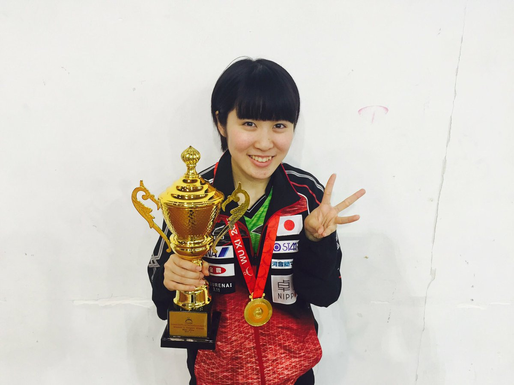

アジア選手権優勝できました 本当にびっくりですが、中国選手に3人にも勝てて嬉しいです
本当に支えてくださった皆さん、応援してくださった皆さんに感謝です
世界選手権に向けてまだまだ上を目指して突っ走ります
本当にびっくりですが、中国選手に3人にも勝てて嬉しいです
本当に支えてくださった皆さん、応援してくださった皆さんに感謝です
世界選手権に向けてまだまだ上を目指して突っ走ります pic.twitter.com/pA5LI5BBJ3
pic.twitter.com/pA5LI5BBJ3
キーボードのショートカットは共通のアクションとサイト内のナビゲーションに使用できます。
ログインする前にブラウザのcookiesを有効にしてください。


アジア選手権優勝できました
本当にびっくりですが、中国選手に3人にも勝てて嬉しいです
本当に支えてくださった皆さん、応援してくださった皆さんに感謝です
世界選手権に向けてまだまだ上を目指して突っ走りますpic.twitter.com/pA5LI5BBJ3
ゾウの飼育担当者に「ゾウと桜の写真を撮って♪」とお願いしたら、 「飼育員目線で良い？」と確認されたので、 あまり深く考えずにうなずいたところ… まさかの…想像だにしない写真が送られてきました。 それではご覧ください。 ゾウの顔の横に立って飼育員が撮った『ゾウと桜』です。pic.twitter.com/rAy6TV48mi
誰もいなくなったスタンド。静寂に包まれるスタジアム。そこに本日のヒーローはたたずんでいました。「ファンの方がどんな感じで応援してくださっているのかなあと考えていました」と細谷選手。しばし一人の時間を過ごしていました。明日も応援宜しくお願い致します。(広報) #chibalottepic.twitter.com/SOiatZjgQC
中条あやみさんインタビュー。 http://bit.ly/2p48AlO 「夢はよく見るほう？」 「一人で飲食店に入れる？」 など、何度も誌面に登場しているメンズノンノだからこそ聞ける質問が多数！pic.twitter.com/zxxzz8OGCA
【熊本地震から１年、万が一に備えて】http://www.tenki.jp/docs/note/bousai/ … いざ、自然災害が発生したとき、それからはじめて行動しても出来ることは限られています。万が一に備えて、「日頃からの備え」がいざというときの役に立たちます。pic.twitter.com/J7ttHBBhqp
昨日はこのメンバーでご飯でしたー(^o^) クビアクが馬の肉は 良質でとても体にいいって言って ずっと食べてました！！ 今度、クビアクが日本で一番好きな 大トロ食べにいきます(^^) そして明日は山内とトークショーなので みなさん是非来てくださいね！pic.twitter.com/xvZkkiH17l
■今人気の記事■ 【ユナイテッド航空の｢惨劇｣はなぜ起きたのか】 ｢個人指名の搭乗拒否｣は米国では当たり前 : http://toyokeizai.net/articles/-/167892?utm_source=Twitter&utm_medium=social&utm_campaign=auto … #東洋経済オンラインpic.twitter.com/eaGCOggyRE
明日16日は真の日本一を決める大会。
無差別で見応えある大会です。
当日券の販売があるので是非お越し下さい！！
去年に引き続き解説をさせていただきます！！
会場に来られない方は、16:00からのNHKをご覧下さい( ^ω^ )
#皇后盃
#柔道pic.twitter.com/sCED7tVcTg
亡きプリンスさんをしのぶ超ド派手ベンツ【#写真】
http://on.wsj.com/2nHjher pic.twitter.com/SnHyuNdzJd
ＪＲＡ「皐月賞」ポスターです。
皐月賞プレゼンターで登場する松坂桃李さんおひとり。そして「最も速い馬が勝つ？ それ以外に勝つ方法があるの？」と。
唯一、レコード勝ちがあるのはプラチナ〝ヴォイス〟。松坂さんは映画デスノートで声優も……。
全体的な青色も気になります。
#皐月賞pic.twitter.com/gRwbL5rAZ6
#飯塚翔太 選手がMt.SAC Relaysに出場！
100m 10秒24（+2.1m) 全体1位
「100m独特の緊張感と難しさを感じましたが次のレースが楽しみになりました。これから本格的にシーズンが始まるので日本でも元気に走る姿をお見せしたいと思います」
#日本陸連pic.twitter.com/nRlatRFyYd
このあと午後0:30からテニス尽くしの特別番組を生放送！MCの古田敦也が松岡修造と対談するスペシャル企画も実現！
『WOWOWテニスデー APRIL 〜錦織圭・大坂なおみ いざ勝負の全仏へ！ 語り尽くせ5時間SP〜』
⇒http://bit.ly/2nzy8HM #wowowpic.twitter.com/M9lh7KbqM1

タリーズから季節限定ドリンク「クレープシュゼットラテ」オレンジ×エスプレッソの爽やかな味わい - https://www.fashion-press.net/news/30275 pic.twitter.com/QQ24J78z7O
【パーティに♪】桃の薔薇ゼリー スマホアプリができたのでダウンロードしてね
http://link.tastemade.com/HE7m/BKsOk1yRAB pic.twitter.com/5ZNZ7hohou
スマホアプリができたのでダウンロードしてね
http://link.tastemade.com/HE7m/BKsOk1yRAB pic.twitter.com/5ZNZ7hohou
清澄白河で話題の“実験アイテムの専門店”をご存知ですか？
ビーカーや試験管など、理科の授業で使ったアイテムをおしゃれなインテリアとして提案しているんですよ。
くわしくは⇒http://co-trip.jp/article/76957/ #ことりっぷpic.twitter.com/UghHVRNoPW
今夜7時〜「嵐にしやがれSP」出ております。鳥取の大山登っております。実家に帰省もしております。ぜひ観てちょ(￣∇￣)pic.twitter.com/KZYsriZpwt
今日、長谷部さんが練習見学に来てくれました！迫力あって興味深かったと言ってもらえて良かったです 長谷部さんありがとうございました
リハビリ頑張って下さいねpic.twitter.com/2oIeHAXvWw
長谷部さんありがとうございました
リハビリ頑張って下さいねpic.twitter.com/2oIeHAXvWw
WEC開幕戦：トヨタがフロントロウ独占。14年以来のポールポジションを獲得 #WEC #WECjp http://bit.ly/2oByTyW pic.twitter.com/DPdrHuNxkS
【4/14 健軍駐屯地における総理訓示】「従来の発想にとらわれることなく、自らの発意で能動的に行動してくれた諸君。諸君の姿は、不安な時を過ごす被災者の皆さんにとって、正に希望の光であったと思います。」⇒ http://www.kantei.go.jp/jp/97_abe/statement/2017/0414kunji.html …pic.twitter.com/DPOI91pJJ8
【ほしぞら情報】夜明け前の南の空に土星が見えています。4月17日にはこの土星に徐々に欠けつつある月が近づきます。今年、月と土星が最も近づいて見えるのは、夜のうちに接近を迎える今回となります http://buff.ly/2n8fxka #国立天文台pic.twitter.com/RVylsGhV4N
VS三河 試合終了 キングス 82-96 シーホース三河 4Q開始キングスが連続で得点を挙げ一気に差をつめる。しかし三河の猛攻にあいキングスの反撃を及ばず82対96で敗戦。 キングスは最後まで戦い続けたことは、明日に繋がると信じてます。明日もキングスの応援よろしくお願いします。pic.twitter.com/TNnD1TWhpH
【2階文学】講談社からすごい小冊子が届きました！『恩田陸と25年間の本たち』･･･恩田陸作品のガイドとして最高の１冊です。全64ページ！しかも無料！（講談社さん太っ腹！）２階D柱の本屋大賞コーナーにて配布中です。『蜜蜂と遠雷』の次に読む本探してる方、ぜひ連れて帰って下さい！（K）pic.twitter.com/CeEKSEmofD
たったいま公開しました : 親に「あ、これ進研ゼミでやったところだ！」と言わせると若返る http://portal.nifty.com/kiji/170414199330_1.htm …pic.twitter.com/mqWnTMfgo5
エイフェックス・ツインの隠れた名曲のみで構成されたミックス音源57分が無料ダウンロード可 - amass http://amass.jp/87424/ @amass_jpさんからpic.twitter.com/9YgabPx7XK
今日はレコーディングでした
最後にスタッフが藤原さんの誕生日ケーキを用意してくれました
 pic.twitter.com/Bgtvy9E6Xr
pic.twitter.com/Bgtvy9E6Xr
[映画ニュース] マッチョガイのセクシーダンスに歓喜！ラスベガスの「MAGIC MIKE LIVE」潜入レポート http://eiga.com/l/LnHvO pic.twitter.com/9vnxyx2C6m
記録更新
久保建英がJ初ゴール！ Jリーグ最年少得点記録を15歳10カ月11日に更新
https://www.soccer-king.jp/news/japan/jl/20170415/561891.html …
J3第5節が15日に行われ、久保建英がC大阪U－23戦で初ゴールを記録し、J最年少得点記録を更新しました。#サッカーキング #JSKpic.twitter.com/SPYEFBlAHY
「森友」問題答弁求める文書５０本に
今朝の東京新聞１押しの記事です！。まずはこの巨大な図をごらんください。今国会に出た #質問主意書 と答弁書から森友問題をひもときます。北朝鮮も緊迫していますがこの問題も幕引きする時ではないですね
http://www.tokyo-np.co.jp/article/politics/list/201704/CK2017041502000136.html …pic.twitter.com/PRTewS9HDL
【ＴＶガイド嵐連載★祝「週刊ＶＳ嵐ガイド」１周年】おかげさまで連載１周年。毎週手に取ってくださっている読者の皆様ありがとうございます。毎回連載取材を楽しんでくださっている嵐さんもありがとうございます。今回は１年通してやってきた企画「ペアワーク対決」の成績発表＆表彰式です♪pic.twitter.com/GqBzVBKAdV
機械じかけのクリーチャー満載。映画『遊星からの物体X ファーストコンタクト』でボツになったアニマトロニクスの裏側 http://bit.ly/2pdZO54 pic.twitter.com/iFr54gG5x5
【RT600UP】 人をダメにするソファを全席配置。人をダメにする映画館がスロバキアに登場 http://karapaia.com/archives/52237354.html …pic.twitter.com/3nni03HjPE
『アイドルマスター シンデレラガールズ スターライトステージ』新CMで新人アイドル中居が舞台デビュー？ 演出家は市村正親 https://www.famitsu.com/news/201704/15131154.html …pic.twitter.com/JZEyoJjxK6
【有毒植物に要注意！】 食用と確実に判断できない植物は、採らない！食べない！売らない！人にあげない！体調が悪くなったら、すぐに医師の診察を。詳しくは→ http://www.mhlw.go.jp/stf/seisakunitsuite/bunya/kenkou_iryou/shokuhin/yuudoku/index.html …pic.twitter.com/bJ3vaSkNvW
【特設：#フランス大統領選挙】
極右・国民戦線のルペン氏と中道・無所属のマクロン氏が激しく争う今回の選挙。ここへ来て、急進左派のメランション氏が伸びて来ています。最新情報をまとめています。
https://www3.nhk.or.jp/news/special/frenchpresident2017/ … #nhk_newspic.twitter.com/7AGDrAWqrI
＼＼\٩(๑`^´๑)۶//／／
コーンロウ完成 今回はメッシュっぽくイカツク！
ありがとうございました！！
今から体重調整！がんばる！pic.twitter.com/ShwPxaZgdb
今回はメッシュっぽくイカツク！
ありがとうございました！！
今から体重調整！がんばる！pic.twitter.com/ShwPxaZgdb
千秋のおすそ分けファイル第2弾
今回は昔のりぼんの付録をメインに作りました
完全に自己満足趣味の世界。
「なんの意味があるの？」相変わらず男性には全く理解されませんがこっち方向の一部の女性にはこの楽しさがわかるはずまた作ろうっと
#交換便 #素敵便 #おすそ分けファイルpic.twitter.com/PXrhtgwJ52
国別対抗戦まであと５日！！ テレビ朝日系列地上波では『世界フィギュアスケート国別対抗戦２０１７ presented by SHISEIDO』を今月２０日（木）から４夜連続で放送します！！... http://fb.me/7BAw9HjYb
位置情報と一緒にツイートした場合、Twitterはその位置情報も保存します。 毎回ツイートする際に、位置情報を付加する/付加しないを選択することができ、いつでも過去の位置情報を全て削除することも可能です。 詳細はこちら